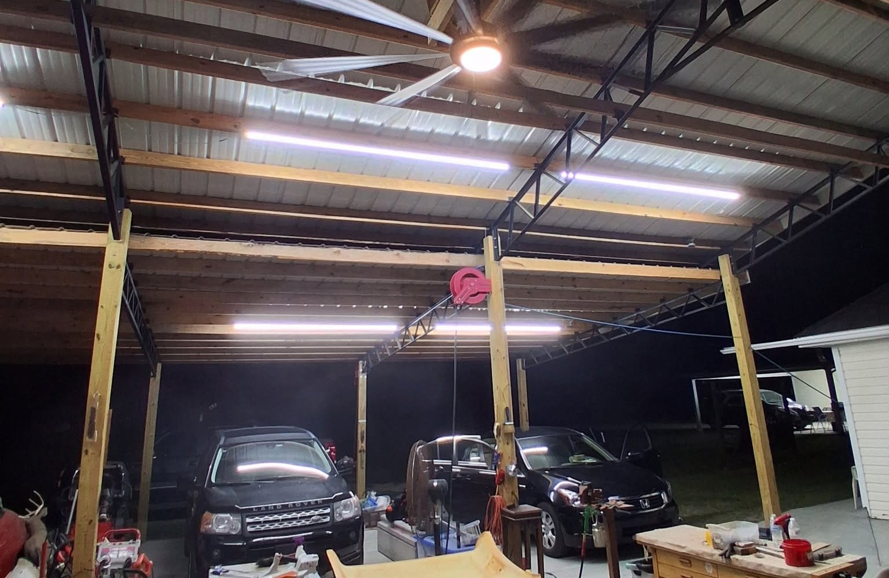

Best Headliners Plus
Built on experience.
Driven by trust.
Professional automotive interior work, grounded in the Golden Rule and three decades of hands-on experience.
Our story
Specialists in the details that make a vehicle feel right.
Best Headliners Plus was founded in 1996 with a simple standard: treat people the way we want to be treated and stand behind quality work. Andy began installing headliners at 17, building the experience that still guides every job today.
In 2000, Andy traveled to Detroit for ASI / American Sunroof training, learning electric spoiler sunroof and moonroof installation from scratch as well as repair techniques for many makes and models.
Today we serve Pooler, Savannah and the Coastal Empire with a focused specialty in headliner replacement and repair, plus select interior and sunroof services.

The promise
Honesty in the process. Quality in the finish.
We believe the best work is clear, careful and built to last. That means explaining what your vehicle needs, being upfront about what we can service, and giving every interior the attention it deserves.
Explore ServicesReady for a better interior?
Tell us what your vehicle needs and we’ll help you choose the right next step.
Request a Quote